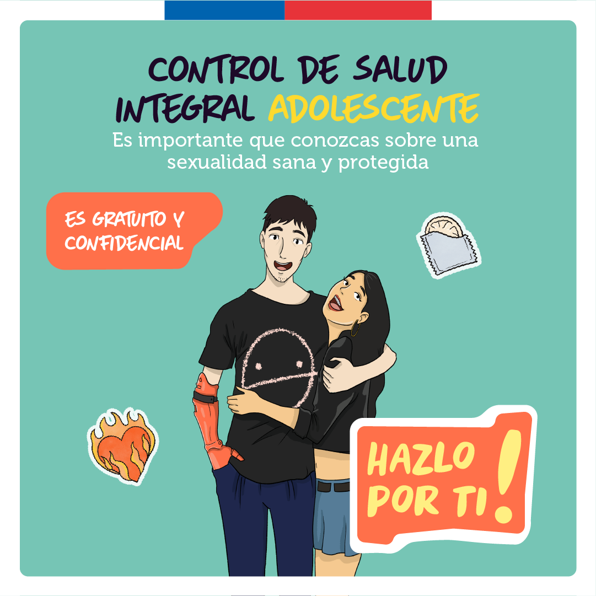
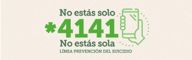
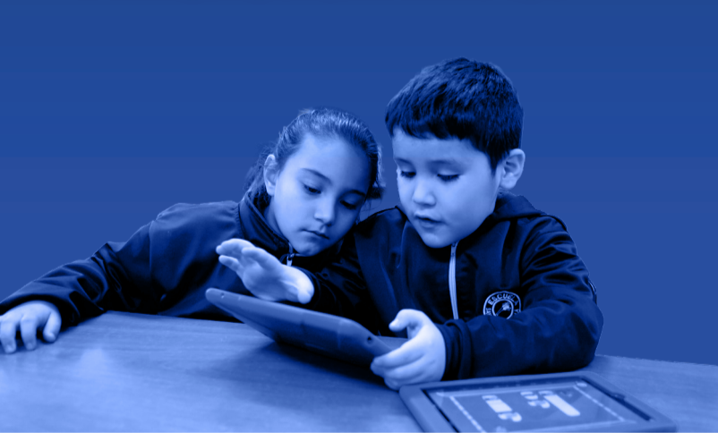

Control de Salud Integral Adolescente: sexualidad

Relaciona títulos, imágenes, jerarquía, datos y fuentes para interpretar y evaluar mensajes públicos.
Avanza en orden y trabaja individualmente.
Observa cómo se aplica la estrategia sobre piezas reales.
Domina los elementos antes de responder la práctica.
Cinco textos discontinuos y 30 reactivos. No se revela la clave durante la clase.



Cómo leerlo: cada punto cruza un grupo de edad del eje horizontal con un porcentaje del eje vertical. La línea solo ayuda a observar la tendencia; no representa una predicción.
| Práctica | Porcentaje | Diferencia respecto de la mayor |
|---|---|---|
| No abre archivos ni enlaces sospechosos | 55% | 0 puntos |
| Cambia las contraseñas | 41% | 14 puntos |
| Usa herramientas de protección | 35% | 20 puntos |
Nota metodológica: las categorías no son excluyentes. Una misma persona puede declarar más de una práctica; por eso los porcentajes no forman partes de un total de 100%.
Compara los Textos 2 y 3: ¿cómo contribuye la fuente institucional a interpretar el propósito y el alcance de cada mensaje?
Escribe una idea concreta en cada espacio. No necesitas repetir la pregunta.
Tu trabajo fue guardado y la Clase 4 aparecerá como Completada en el panel SIMCE.